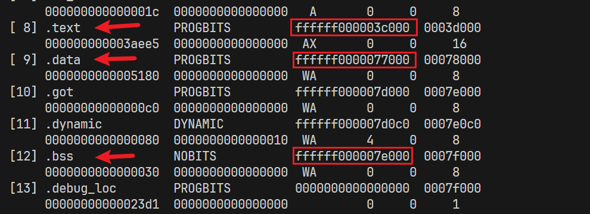

YSOS-rust lab1
YSOS-lab1
1. 实验要求
- 请参考 代码与提交规范 进行实验代码编写。
- 依据 实验任务 完成实验。
- 代码编写任务：观察提供的代码，完善所有标记为
FIXME:的部分，并验证结果是否符合预期。请在报告中介绍实现思路，截图展示关键结果。 - 思考任务：完成 “思考题” 和 “实验任务” 部分的内容，在报告中简要进行回答。注：思考题可能也是理解代码、实现功能的重要提示。
- Bonus 加分项：学有余力的同学可以任选 Bonus 部分完成，尝试完成更多的功能，并在报告中进行展示。这部分内容不是必须的要求。
- 代码编写任务：观察提供的代码，完善所有标记为
- 请在实验报告中涵盖相关任务的实现截图、实验任务对应问题的解答、实验过程中遇到的问题与解决方案等内容。
2. 实验过程
初始化项目
YatSenOS-Tutorial-Volume-2/src/0x00文件夹复制到当前目录下，名称为0x00
将YatSenOS-Tutorial-Volume-2/src/0x01文件夹下的所有内容复制到0x00文件夹,替换其中重复的文件
编译内核ELF
在 pkg/kernel 目录下运行 cargo build --release，在target目录下得到release/、.rustc_info.json、x86_64-unknown-none/
执行readelf -a target/x86_64-unknown-none/release/ysos_kernel > readelf.txt，可以查看编译产物的基本信息
实验任务
- 请查看编译产物的架构相关信息，与配置文件中的描述是否一致？
readelf.txt第9行 Machine: Advanced Micro Devices X86-64说明架构是X86-64, 和配置文件pkg/kernel/config/x86_64-unknown-none.json第8行"arch": "x86_64"一致
- 找出内核的入口点，它是被如何控制的？结合源码、链接、加载的过程，谈谈你的理解。
源码:
- 在
pkg/kernel/src/main.rs目录下定义了内核的入口 - 它定义了一个 入口点（entry point），即
boot::entry_point!(kernel_main);。这表示在程序启动时，kernel_main函数将被调用。 - 查看
pkg/boot/src/lib.rs中对boot::entry_point!宏的定义,- 它要求入口函数必须拥有签名
fn(&'static BootInfo) -> ! - 这个宏会创建一个名为
_start的函数。链接器会将这个函数作为程序的入口点。 - 使用这个宏的优势在于，它确保了函数和参数类型的正确性。
- 它要求入口函数必须拥有签名
链接:
查看pkg/kernel/config/kernel.ld, 这是一个链接器脚本, 它定义了如何将不同的代码和数据段组合成最终的可执行内核映像
其中第一行为ENTRY(_start)：这行指令指定了程序的入口点，即从 _start 标签处开始执行
加载:
-
操作系统运行用户程序时将其映射到内存中；
-
当它看到可执行文件中的
PT_INERP时，操作系统将PT_INTERP指定的动态链接器映射进内存，并通过栈向其传递它所需要的参数，并跳到动态链接器的入口处开始执行； -
动态连接器的入口是
_start, 这样源码中_start指定的kernel_main函数就能开始执行
- 请找出编译产物的 segments 的数量，并且用表格的形式说明每一个 segments 的权限、是否对齐等信息。
执行readelf -l target/x86_64-unknown-none/release/ysos_kernel, 可以看到程序有8个segments
- R表示可读
- W表示可写
- E表示可执行
| Segment | 权限 | 对齐 |
|---|---|---|
| 00 | R | 0x1000 |
| 01 | R E | 0x1000 |
| 02 | RW | 0x1000 |
| 03 | RW | 0x1000 |
| 04 | RW | 0x8 |
| 05 | R | 0x1 |
| 06 | R | 0x4 |
| 07 | RW | 0x0 |
在UEFI中加载内核
代码见关键代码部分, [点击跳转](# 3. 关键代码)
完成代码后，输入python ysos.py build -p debug以编译内核
使用 python ysos.py launch -d 启动 QEMU 并进入调试模式，这时候 QEMU 将会等待 GDB 的连接。
在VScode中安装好CodeLLDB，然后启动调试，就可以进入调试环境，如下面的截图
实验任务
1.set_entry 函数做了什么？为什么它是 unsafe 的？
源码如下
1 | |
首先，代码调用了elf.header.pt2.entry_point()，可以在/root/.cargo/registry/src/index.crates.io-6f17d22bba15001f/xmas-elf-0.9.1/src/header.rs查看函数的源码
源码是一个getter宏: getter!(entry_point, u64); , 用于获取结构体字段值, 它会被展开为类似以下的形式：
1 | |
可以看出, 调用elf.header.pt2.entry_point()会返回一个u64作为内核的入口地址, 它会被类型转换为usize类型
在pkg/boot/src/lib.rs可以看到set_entry()函数的源码
1 | |
可以看出, set_entry()函数需要修改静态可变变量ENTRY的值, 它可能会被多个线程同时改变，造成未定义的行为, 所以是危险的, 必须要放在unsafe块中才能通过编译.
除此之外, 从代码注释可以看出, 函数不安全的原因是调用者必须保证内核跳转地址是有效的, 否则, 程序可能会跳转到未知的内存区域执行, 是不安全的
2.jump_to_entry 函数做了什么？要传递给内核的参数位于哪里？查询 call 指令的行为和 x86_64 架构的调用约定，借助调试器进行说明
jump_to_entry函数首先判断变量ENTRY是否为0, 如果为0, 则说明内核入口ENTRY未被成功修改
随后执行以下汇编指令:
-
mov rsp, {}将栈指针rsp设置为stacktop的值 -
call {}调用ENTRY所指向的函数。这里使用了rdi寄存器传递bootinfo的地址
最后，有 unreachable!()。这是一个永远不会执行的代码，用于标记函数的返回类型为 !（即“never”类型）。这意味着函数不会正常返回，而是直接终止程序。
如下是调试jump_to_entry函数可以看到的汇编代码
代码asm!("mov rsp, {}; call {}", in(reg) stacktop, in(reg) ENTRY, in("rdi") bootinfo);对应的汇编指令位于043BB3D5, 指令如下:
1 | |
%rcx是作为函数参数传入的bootinfo, 即BootInfo结构体的地址, 它被赋值给%rdi
%rdx是作为函数参数传入的stacktop, 它被赋值给%rsp，rsp 寄存器指向了当前栈顶的地址，所以这句指令可以实现设置栈顶地址的目的
callq *%rax 会从 %rax 中加载一个**四字（64位）**作为地址，然后调用从该地址开始的函数。
x86_64 架构的调用约定，用call调用函数时，前 6 个整型参数通过寄存器传递，分别存放在 %rdi、%rsi、%rdx、%rcx、%r8、%r9。
BootInfo结构体的地址就被存在%rdi中，可以传递给内核
3.entry_point! 宏做了什么？内核为什么需要使用它声明自己的入口点？
entry_point! 宏接受一个参数作为内核入口函数的函数名,它会生成一个新的函数, 名为__impl_start, 这个函数会验证传递的函数的签名, 确保它接受一个 'static 生命周期的 BootInfo 引用, 并且返回一个 ! 类型
然后, __impl_start 函数会调用传递的函数，将 boot_info 参数传递给它(BootInfo结构体的地址已经被存在%rdi寄存器中了, 它对应函数的第一个参数)
内核为什么需要使用它声明自己的入口点?
-
链接器会将标记有
_start的函数作为内核的入口点, 这个宏会让__impl_start函数带上_start标记, 以便链接器找到内核入口 -
比起直接创建一个标记了
_start的函数, 这个宏还能保证内核入口函数接受的参数类型是正确的
4.如何为内核提供直接访问物理内存的能力？你知道几种方式？代码中所采用的是哪一种？可以参考这篇文章进行学习。
几种方式:
-
Identity Mapping: 页表的物理地址也是有效的虚拟地址
-
Map at a Fixed Offset: 虚拟地址=物理地址+固定的偏移量
-
Map the Complete Physical Memory: 映射整个物理内存到虚拟内存,这样内核就能够访问到任意物理内存
-
Temporary Mapping: 对于物理内存非常小的设备，我们只能在需要访问页表帧时临时映射它们。
-
Recursive Page Tables: 将页表中的条目映射到表本身
代码采用了Map the Complete Physical Memory方式,由esp/EFI/BOOT/boot.conf中的配置可知, 有一项为physical_memory_offset=0xFFFF800000000000, 设置了整个物理内存到虚拟内存的偏移量. map_physical_memory函数会根据这一设置映射物理内存
5.为什么 ELF 文件中不描述栈的相关内容？栈是如何被初始化的？它可以被任意放置吗？
因为ELF 文件的目标是让处理器正确执行我们编写的代码，而栈是在程序运行时动态分配的. 栈的大小和位置在运行时由操作系统决定，不是在编译或链接阶段确定的. 因此，ELF 文件不直接描述栈的内容，而是依赖于操作系统在加载时设置栈的相关信息.
所以在加载内核时, 需要手动映射内核栈, 通过下面的代码实现
1 | |
它不能被任意放置, 而要根据配置文件中设置的栈起始地址kernel_stack_address, 栈初始分配大小kernel_stack_auto_grow和栈总大小kernel_stack_size决定
根据上述调试过程，回答以下问题，并给出你的回答与必要的截图：
请解释指令 layout asm 的功能。倘若想找到当前运行内核所对应的 Rust 源码，应该使用什么 GDB 指令？
layout asm 是 GDB 中的一个强大命令，用于在调试会话期间显示汇编代码窗口, 可以在 GDB 中同时查看源代码和对应的汇编代码。效果如下图
使用list命令可以查看当前运行内核对应的rust源码,如下图
假如在编译时没有启用 DBG_INFO=true，调试过程会有什么不同？
重新编译, 执行python ysos.py build(去掉了-p debug参数)
然后执行python ysos.py launch -d, 启动gdb
gdb窗口中只能显示汇编代码, 而无法显示rust源码
默认情况下，编译生成的可执行文件中没有可供 GDB 调试使用的特殊信息。为了将必要的调试信息整合到可执行文件中，我们需要在编译阶段加上DBG_INFO=true
你如何选择了你的调试环境？截图说明你在调试界面（TUI 或 GUI）上可以获取到哪些信息？
我使用了2种调试环境
- gef
可以获得的信息如下图指出
- VScode
可以获得的信息如下图指出
UART和日志输出
| IO端口偏移 | DLAB的设置 | 映射到该端口的寄存器 | Register mapped to this port |
|---|---|---|---|
| +0 | 0 | 数据寄存器。读取该寄存器是从接收缓冲区读取的。写入该寄存器将写入发送缓冲区。 | Data register. Reading this registers read from the Receive buffer. Writing to this register writes to the Transmit buffer. |
| +1 | 0 | 中断使能寄存器。 | Interrupt Enable Register. |
| +0 | 1 | 当 DLAB 设置为 1 时，这是用于设置波特率的除数值的最低有效字节。 | With DLAB set to 1, this is the least significant byte of the divisor value for setting the baud rate. |
| +1 | 1 | 当 DLAB 设置为 1 时，这是除数值的最高有效字节。 | With DLAB set to 1, this is the most significant byte of the divisor value. |
| +2 | - | 中断识别和 FIFO 控制寄存器 | Interrupt Identification and FIFO control registers |
| +3 | - | 线路控制寄存器。该寄存器的最高有效位是 DLAB。 | Line Control Register. The most significant bit of this register is the DLAB. |
| +4 | - | 调制解调器控制寄存器。 | Modem Control Register. |
| +5 | - | 线路状态寄存器。 | Line Status Register. |
| +6 | - | 调制解调器状态寄存器。 | Modem Status Register. |
| +7 | - | 暂存寄存器。 | Scratch Register. |
编写串口驱动,代码见关键代码部分, [点击跳转](# 3.1-串口驱动的实现)
设置日志输出格式,代码见关键代码部分, [点击跳转](# 3.2-日志输出)
思考题
1.在 pkg/kernel 的 Cargo.toml 中，指定了依赖中 boot 包为 default-features = false，这是为了避免什么问题？请结合 pkg/boot 的 Cargo.toml 谈谈你的理解。
pkg/boot 的 Cargo.toml 中有如下内容
1 | |
当在 pkg/kernel 的 Cargo.toml 指定依赖中 boot 包为 default-features = false, 上面的特性会被禁用
根据uefi-services的官方文档, It includes a panic handler, a logger, and a global allocator.
设置不包含它,可以避免自己定义的panic handler, logger 与之发生冲突
另外,其使用的logger crate会使用到std crate, 与#![no_std] 冲突
2.在 pkg/boot/src/main.rs 中参考相关代码，聊聊 max_phys_addr 是如何计算的，为什么要这么做？
相关代码如下
1 | |
这段代码是在操作系统启动过程中，用于获取内存映射信息的
-
首先，从
system_table中获取引导服务（boot_services()）。 -
然后，调用
memory_map(mmap_storage)来获取内存映射信息。这个函数返回一个内存映射的结构体，其中包含了系统中不同内存区域的信息。 -
接下来，对内存映射的每个条目进行处理。对于每个条目m，计算了物理地址的上限（
max_phys_addr）。具体计算如下：-
m.phys_start表示该内存区域的起始物理地址。 -
m.page_count表示该区域占用的页数（每页大小为 4KB，所以乘以0x1000）。 -
将这两者相加，得到了该内存区域的结束物理地址。
-
-
接着，使用
.max()函数找到了所有内存区域中的最大物理地址。这个值将作为系统的最大物理地址。 -
最后，使用
.max(0x1_0000_0000)来确保最大物理地址至少是0x1_0000_0000（即 4GB）。这是因为在某些系统中，IOAPIC（输入输出高级可编程中断控制器）的内存映射区域位于这个地址之上。
3.串口驱动是在进入内核后启用的，那么在进入内核之前，显示的内容是如何输出的？
在进入内核之前, 由引导加载程序，即UEFI负责实现串口驱动
4.在 QEMU 中，我们通过指定 -nographic 参数来禁用图形界面，这样 QEMU 会默认将串口输出重定向到主机的标准输出。
- 假如我们将
Makefile中取消该选项，QEMU 的输出窗口会发生什么变化？请观察指令make run QEMU_OUTPUT=的输出，结合截图分析对应现象。
现象:会弹出QEMU窗口, 输出在窗口中,但是进入内核后就停止了输出
- 在移除
-nographic的情况下，如何依然将串口重定向到主机的标准输入输出？请尝试自行构造命令行参数，并查阅 QEMU 的文档，进行实验。
执行下面的命令
1 | |
其中关键是-serial stdio, 将串口重定向到主机的标准输入输出
效果如下
可以在主机的控制台看到内核的输出
加分项
1.😋 线控寄存器的每一比特都有特定的含义，尝试使用 bitflags 宏来定义这些标志位，并在 uart16550 驱动中使用它们。
参考文档https://www.lammertbies.nl/comm/info/serial-uart, 可以定义如下的bitflags宏
1 | |
在 uart16550 驱动中使用它们,代码如下
1 | |
2.😋 尝试在进入内核并初始化串口驱动后，使用 escape sequence 来清屏，并编辑 get_ascii_header() 中的字符串常量，输出你的学号信息。
对pkg/kernel/src/drivers/serial.rs添加如下,用于清屏
1 | |
对pkg/kernel/src/utils/mod.rs修改如下
1 | |
效果如图
清屏是成功的,而且学号信息打印了出来
3.🤔 尝试添加字符串型启动配置变量 log_level，并修改 logger 的初始化函数，使得内核能够根据启动参数进行日志输出。
UEFI读取数字部分的参考文献:https://stackoverflow.com/questions/73113685/how-do-i-read-user-input-in-uefi-rs-uefi-rust-wrapper
代码详见关键代码部分, [点击跳转](# 加分项3)
UEFI执行过程中会停止, 要求用户输入一个数字表示log等级
如果输入3,代表info,结果如下, info可以正常输出
如果输入1, 代表Error,结果如下, info不能输出
4.🤔尝试使用调试器，在内核初始化之后（ysos::init 调用结束后）下断点，查看、记录并解释如下的信息：
- 内核的栈指针、栈帧指针、指令指针等寄存器的值。
如图,分别输出了栈指针指向的内存地址及所在地址的数据, 栈帧指针指向的内存地址及所在地址的数据, 以及指令指针寄存器的值
- 内核的代码段、数据段、BSS 段等在内存中的位置。
执行readelf -Sl esp/KERNEL.ELF ,结果如下图

5.🤔 “开发者是愿意用安全换取灵活的”，所以，我要把代码加载到栈上去，可当我妄图在栈上执行代码的时候，却得到了 Segment fault，你能解决这个问题吗？
如下图, 将代码加载到了栈上, 然后执行
正常编译的结果会导致segment fault,但是如果在编译时加上-z execstack, 允许程序在栈上执行, 就不会导致segment fault, 还能正常输出
分别用两种编译方法, 使用readelf查看Program Headers的权限,如下图
只有第二张图编译的结果可以在栈上执行代码, 可以看出其GNU_STACK是具有执行权限的
3. 关键代码
2.1-加载相关文件
加载配置文件
pkg/boot/src/main.rs
1 | |
加载内核 ELF
pkg/boot/src/main.rs
1 | |
2.2-更新控制寄存器
pkg/boot/src/main.rs
1 | |
2.3-映射内核文件
pkg/boot/src/main.rs
1 | |
补全load_segment函数: 根据段是否可读,可写,可执行的要求设置page_table_flags
pkg/elf/src/lib.rs
1 | |
3.1-串口驱动的实现
pkg/kernel/src/drivers/uart16550.rs
1 | |
3.2-日志输出
pkg/kernel/src/utils/logger.rs
1 | |
加分项3
pkg/boot/src/main.rs: 这段代码在UEFI启动阶段要求用户输入一个数字1-5, 表示log_level, 结果储存在u8变量level中
1 | |
结尾: 将level的地址传递给jump_to_entry函数
1 | |
pkg/boot/src/lib.rs: 修改jump_to_entry函数, 将level的地址作为第二个参数传给内核(放在rsi寄存器中)
1 | |
然后修改entry_point宏, 允许内核main函数接收第二个参数
1 | |
pkg/kernel/src/main.rs修改kernel_main函数, 允许接收第二个参数,并传给ysos::init
1 | |
pkg/kernel/src/lib.rs
1 | |
pkg/kernel/src/utils/logger.rs根据数字设置不同的log等级
1 | |
4. 实验结果
如图,内核成功启动,并且输出了log

5. 总结
学习了如何编写boot引导启动操作系统内核, 并且学会了编写串口驱动, 对rust项目开发更加熟悉